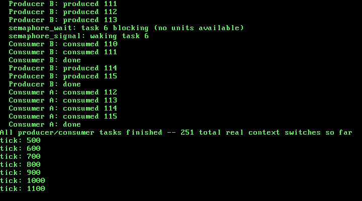

14. Blocking Synchronization: Semaphores and Sleep/Wake¶
What you will understand: why Chapter 13's spinlock is the wrong tool for waiting on something that might not be ready for a real, unpredictable stretch of time, what a semaphore is and how its wait/signal operations differ from a spinlock's busy-check, the classic "lost wakeup" race a naive blocking implementation falls into and how this chapter's own semaphore avoids it, and how to verify a real bounded-buffer producer/consumer using nothing but its own real, captured serial output.
What you need to know first: Chapter 13's spinlock (014_spinlock.h/014_spinlock.c, unchanged) and Chapter 12's scheduler (task_yield, task_tick, the round-robin scan) -- this chapter builds a new primitive on top of both rather than changing either's own core logic. Still Part 6.
What a spinlock is the wrong tool for¶
Chapter 13's spinlock answers one specific question well: how does a task protect a short, bounded piece of work -- a few field writes to a free-list block -- from another task's own preemption landing in the middle of it? The answer there was to disable interrupts for exactly as long as that short critical section takes, which on this single CPU is always a few dozen instructions at most.
A different kind of waiting shows up constantly in real systems: a task that needs something another task hasn't produced yet, and has no way to know how long that will take -- it could be ready on the very next instruction, or it could be a real, unpredictable stretch of wall-clock time away. Protecting that kind of wait with a spinlock would mean disabling interrupts and looping on a flag for as long as it takes, burning 100% of this single CPU checking a value that only some other task's own code can ever change -- code that, with interrupts disabled, cannot even run. A spinlock-protected wait for something slow does not just waste cycles; on a single CPU it can outright deadlock, since the one thing that could make the flag change is exactly what disabling interrupts prevents from running at all.
Semaphores: a real way to sleep instead of spin¶
The OSDev Wiki gives the real, precise definition:
"A semaphore is a synchronization primitive data type. From the programmer's perspective, it is an opaque data type with two defined operations, usually called wait and signal."
(OSDev Wiki, "Semaphore": https://wiki.osdev.org/Semaphore)
The real difference from a spinlock is what happens when nothing is available:
"A thread calling wait on a semaphore whose value is 0 should be removed from the scheduler queue, and only added to it again when the semaphore is signalled."
(OSDev Wiki, "Semaphore")
That is a fundamentally different move from spinning: instead of looping and checking, the waiting task's own state changes to BLOCKED, this kernel's own task_yield() gives the CPU to some other task that actually has work to do, and the blocked task simply does not run again -- not for one instruction -- until something wakes it. When a unit does become available, the OSDev Wiki's own "Synchronization Primitives" page describes the handoff:
"The function v, also called signal() (or release()), increments the semaphore and, if it is still negative, indicates to the scheduler to wake the next waiting process in the queue."
(OSDev Wiki, "Synchronization Primitives": https://wiki.osdev.org/Synchronization_Primitives)
This chapter's own semaphore uses a simpler, non-negative convention than that exact quote -- a count that never goes below 0, plus a separate explicit queue of waiting task indices -- rather than letting the semaphore's own integer go negative with its magnitude tracking the waiter count. Both are real, valid semaphore designs; this chapter picked the non-negative-plus-explicit-queue version because it is easier to get right by hand and easier to verify by eye in a real printed log, and because the OSDev Wiki's own "Semaphore" page (quoted above) describes waking "the thread at the front of the queue" as an explicit FIFO queue operation regardless of which counting convention is used.
014_task.h/014_task.c: three task states instead of one flag¶
Every task in this kernel needed exactly one bit of state through Chapter 13: done, or not done. A task that can genuinely sleep needs a third state, and the scheduler's own round-robin scan needs to skip that state too:
#ifndef UNIX_OS_014_TASK_H
#define UNIX_OS_014_TASK_H
#include <stdint.h>
/* Sets up this kernel's task list with exactly one task -- task 0, the
* kernel's own boot-time execution context (the one kmain() is already
* running on when this is called), still running on the same boot
* stack every chapter since Chapter 1 has used. Must be called before
* any task_create()/task_yield()/task_exit() call. */
void task_init(void);
/* Creates a new cooperative kernel task: allocates it a real stack
* from Chapter 9's kmalloc(), and pre-populates that stack so the
* first time this task is ever switched into, execution begins at
* `entry` (OSDev Wiki, "X86 Cooperative Multitasking Tutorial": "the
* kernel needs to put values on the new task's kernel stack to match
* the values that 'switch_tasks' expects to pop off"). `entry` must
* eventually call task_exit() -- it must never return normally.
* Returns the new task's index (1, 2, ...), or -1 if this kernel's
* fixed task table is already full. */
int task_create(void (*entry)(void));
/* Voluntarily gives up the CPU: saves the calling task's callee-saved
* registers and stack pointer, picks the next RUNNING task in
* round-robin order, and switches to it. Returns normally, right
* where it left off, once this task is switched back in. If no other
* task is currently RUNNING, returns immediately without performing a
* real switch. */
void task_yield(void);
/* Marks the calling task DONE and switches away from it permanently.
* Never returns -- this task's own stack and call frame are simply
* abandoned from this point on. */
void task_exit(void);
/* Non-zero once the task at `index` (as returned by task_create())
* has called task_exit(). */
int task_is_done(int index);
/* The currently-running task's own index -- what task_create() itself
* returned when this task was created (0 for the kernel's own boot
* task). New this chapter, so 014_semaphore.c can record which task
* is waiting on which semaphore without task.c having to know
* anything about semaphores itself. */
int task_current_id(void);
/* Marks the CALLING task BLOCKED and returns immediately -- it does
* NOT yield the CPU itself. Split out from a single "block and yield"
* call on purpose: 014_semaphore.c needs this exact state transition
* to happen while it still holds its own lock, so that no concurrent
* semaphore_signal() can dequeue this task as a waiter before the
* scheduler has actually stopped considering it runnable (see
* 014_semaphore.c's own comments for the real race this avoids). The
* caller is expected to give up the CPU with task_yield() itself,
* separately, once it is safe to do so. A BLOCKED task is skipped by
* every future task_yield()/task_tick() scan until some other task
* calls task_wake() on it. */
void task_block_self(void);
/* Marks the task at `index` READY again, making it eligible to be
* picked by task_yield()'s own round-robin scan the next time it is
* that task's turn -- it does NOT itself trigger an immediate switch
* to that task. Called from 014_semaphore.c's semaphore_signal(),
* always from inside that semaphore's own lock (interrupts already
* off), so this needs no locking of its own. */
void task_wake(int index);
/* Total number of real context switches switch_task() has performed
* since task_init(). Exists purely for this chapter's own real, live
* verification. */
uint32_t task_switch_count(void);
/* Called from 014_pit.c's irq0_handler() on every single real IRQ0
* tick, after that tick's own EOI has already been sent. Before
* task_init() has run, does nothing -- this kernel has no task table
* to preempt yet. After task_init(), calls task_yield() unconditionally,
* exactly once per real tick: this chapter's whole scheduling policy
* is "one tick, one time slice," chosen because it is the simplest
* policy whose real switch count is independently predictable from
* nothing but the real tick count, with no separate countdown state
* of its own to get wrong. */
void task_tick(void);
#endif
task_block_self() deliberately does not yield the CPU itself -- it only flips this task's own state to BLOCKED and returns immediately, still running. That split matters; see 014_semaphore.c's own comments below for exactly why. task_wake() is the mirror image: it only flips a task back to READY, it does not force an immediate switch to it -- the woken task simply becomes eligible again the next time task_yield()'s own round-robin scan reaches it, whether that is because it was preempted by a tick or because some other task calls task_yield()/task_exit() itself.
The scheduler's own scan needed one real fix to handle three states correctly instead of two:
#include <stdint.h>
#include "014_kheap.h"
#include "014_printf.h"
#include "014_task.h"
/* This chapter's own Thread Control Block, in the same spirit the
* OSDev Wiki describes for kernel-level tasks: "The TCB holds task
* state including the kernel stack pointer (ESP) ... " (OSDev Wiki,
* "Kernel Multitasking": https://wiki.osdev.org/Kernel_Multitasking).
* This kernel has no user/kernel privilege split and no per-task
* address space yet -- every task here runs in ring 0 sharing the one
* page directory Chapter 8 built -- so this TCB carries nothing for
* CR3 or a TSS.ESP0 field the way a fuller kernel's would; `esp` is
* almost the whole of what switch_task() needs. `entry` is new since
* Chapter 12 -- see task_start_trampoline() below for why. `state`
* replaces this struct's old plain `done` flag this chapter: a task
* can now be BLOCKED (waiting on a semaphore, see 014_semaphore.c)
* as well as READY or DONE, and the scheduler needs to tell all three
* apart, not just "finished or not." */
typedef enum {
TASK_STATE_READY = 0,
TASK_STATE_BLOCKED,
TASK_STATE_DONE
} task_state_t;
struct task {
uint32_t esp; /* valid only while this task is NOT current */
void *stack_base; /* the kmalloc()'d block backing this task's
* stack -- kept only so a later chapter with
* real task teardown could kfree() it; this
* chapter never frees a task's stack */
void (*entry)(void); /* this task's real entry point -- kept so
* task_start_trampoline() can find it */
task_state_t state;
};
/* Chapter 13 needed 5 slots (kmain's own task 0, Chapter 12's own
* Task A/Task B, and Chapter 13's own Stress A/Stress B). This
* chapter adds four more demo tasks of its own (two producers, two
* consumers, below) without reclaiming any earlier chapter's slot --
* this scheduler still never reuses a finished task's slot -- so the
* fixed table has to be sized for every task any chapter's own kmain()
* creates across a single boot, not just however many are runnable at
* once. */
#define TASK_MAX_TASKS 9u
#define TASK_STACK_SIZE 4096u
static struct task tasks[TASK_MAX_TASKS];
static int task_count = 0;
static int current_task = 0;
static uint32_t switch_count = 0;
static int tasking_ready = 0;
extern void switch_task(uint32_t *old_esp_ptr, uint32_t new_esp);
/* Chapter 11's task_create() put `entry` directly on a new task's
* stack as the address switch_task()'s own `ret` would jump to --
* correct for a purely cooperative scheduler, where every switch_task()
* call happens with IF already 1 (interrupts enabled) throughout,
* since nothing in that chapter ever touched IF at all. This chapter
* changes that: every real switch now happens from *inside* an IRQ0
* interrupt handler, entered through a real interrupt gate that the
* CPU itself clears IF for on entry (OSDev Wiki's own IDT gate-type
* description; this book's own idt_set_gate() calls have used type
* 0x8E, a 32-bit interrupt gate, since Chapter 4). switch_task()
* itself never saves or restores EFLAGS -- IF is one single, real,
* shared CPU flag, not per-task state -- so whichever task gets
* switched into next inherits whatever IF happens to be at that exact
* moment: 0, because we are still inside that interrupt handler. A
* task resuming through task_yield()'s own return point can restore
* that itself (see below); but a task running for the very first
* time jumps straight to `entry`, which has no such checkpoint to
* pass through -- so without this trampoline, a brand-new task would
* start running with interrupts silently, permanently disabled, and
* this whole chapter's preemption would only ever work once. */
static void task_start_trampoline(void) {
__asm__ volatile ("sti");
tasks[current_task].entry();
/* Defensive, not load-bearing: every real task body in this
* chapter already calls task_exit() itself. If one ever forgot,
* this is what stands between that mistake and running off the
* end of a kmalloc()'d stack into whatever memory happens to
* follow it. */
task_exit();
}
void task_init(void) {
tasks[0].esp = 0; /* never read while task 0 is current */
tasks[0].stack_base = 0; /* task 0 owns no kmalloc'd stack -- it
* is this kernel's own boot stack,
* already running before task_init()
* is ever called */
tasks[0].entry = 0; /* task 0 never starts via the
* trampoline -- it is already running */
tasks[0].state = TASK_STATE_READY;
task_count = 1;
current_task = 0;
switch_count = 0;
tasking_ready = 1;
}
int task_create(void (*entry)(void)) {
if (task_count >= (int) TASK_MAX_TASKS) {
kprintf("task_create: task table full (%u tasks) -- refusing\n", TASK_MAX_TASKS);
return -1;
}
struct task *t = &tasks[task_count];
void *stack = kmalloc(TASK_STACK_SIZE);
uint32_t top = (uint32_t) (uintptr_t) stack + TASK_STACK_SIZE;
uint32_t *sp = (uint32_t *) top;
/* Build the exact stack frame switch_task()'s own epilogue expects
* to pop the first time this task is switched into: EDI, ESI, EBX,
* EBP (in that order, since switch_task() pushed EBP first and
* pops in reverse), then a return address on top -- which is what
* makes switch_task()'s final `ret` land directly on
* task_start_trampoline (OSDev Wiki, "X86 Cooperative Multitasking
* Tutorial": a new task's registers are initialized with
* "task->regs.esp = (uint32_t) allocPage() + 0x1000" and
* "task->regs.eip = (uint32_t) main"). Zero is a fine placeholder
* for EBP/EBX/ESI/EDI here -- nothing has run inside this task yet
* to give those registers a real saved value. */
*(--sp) = (uint32_t) (uintptr_t) task_start_trampoline; /* return address for `ret` */
*(--sp) = 0; /* ebp */
*(--sp) = 0; /* ebx */
*(--sp) = 0; /* esi */
*(--sp) = 0; /* edi */
t->esp = (uint32_t) (uintptr_t) sp;
t->stack_base = stack;
t->entry = entry;
t->state = TASK_STATE_READY;
int index = task_count;
task_count++;
return index;
}
void task_yield(void) {
/* OSDev Wiki, "Kernel Multitasking": "Caller is expected to
* disable IRQs before calling, and enable IRQs again after
* function returns" -- rather than push that requirement onto
* every caller, task_yield() enforces it itself, so it stays
* correct regardless of whether it was reached from an ordinary
* cdecl call or, as every real call in this chapter's own run
* is, from inside an interrupt handler where IF is already 0. */
__asm__ volatile ("cli");
int old = current_task;
int next = -1;
/* Scans every OTHER task first, in round-robin order, then wraps
* all the way back around to `old` itself as the last candidate
* checked. This one loop now correctly covers every case this
* chapter's own three task states can produce: some other READY
* task exists (ordinary switch); no other task is READY but `old`
* itself still is (the loop's own wraparound finds it, and the
* "next == old" check below turns that into a no-op); or `old`
* itself is no longer READY either -- freshly BLOCKED by this
* chapter's own task_block_self(), or DONE -- in which case the
* whole scan finds nothing at all and `next` stays -1. Chapter
* 13's own version of this loop only ever had to handle the first
* two cases, since nothing in that chapter could make `old` itself
* non-runnable out from under its own yield. */
for (int i = 1; i <= task_count; i++) {
int candidate = (old + i) % task_count;
if (tasks[candidate].state == TASK_STATE_READY) {
next = candidate;
break;
}
}
if (next == -1) {
/* Nothing in the whole task table is READY -- not some other
* task, and not even this one. Every earlier chapter's own
* version of this message meant "everyone has called
* task_exit()"; this chapter adds a second real way to reach
* it: every remaining task is genuinely BLOCKED on a
* semaphore that nothing will ever signal. Both are real dead
* ends this scheduler has no idle task to fall back on for. */
kprintf("task_yield: no runnable task remains -- halting\n");
for (;;) {
__asm__ volatile ("hlt");
}
}
if (next == old) {
__asm__ volatile ("sti");
return; /* only this task is runnable -- nothing to switch to */
}
current_task = next;
switch_count++;
switch_task(&tasks[old].esp, tasks[next].esp);
/* Execution only reaches here once this exact task is switched
* back into again -- possibly much later, and possibly by
* unwinding all the way back up through some real IRQ0 stub's own
* `iret`, which is a second, independent place IF=1 also gets
* restored from. The explicit `sti` here is still required: it is
* what re-enables interrupts for every task that resumes through
* this exact return point rather than through an `iret` at all. */
__asm__ volatile ("sti");
}
void task_exit(void) {
tasks[current_task].state = TASK_STATE_DONE;
task_yield();
/* unreachable: task_yield() above either switches this task's own
* stack away permanently (this call frame is simply abandoned,
* never resumed again) or halts the kernel outright if nothing
* else is runnable. */
}
int task_is_done(int index) {
return tasks[index].state == TASK_STATE_DONE;
}
int task_current_id(void) {
return current_task;
}
void task_block_self(void) {
tasks[current_task].state = TASK_STATE_BLOCKED;
}
void task_wake(int index) {
tasks[index].state = TASK_STATE_READY;
}
uint32_t task_switch_count(void) {
return switch_count;
}
void task_tick(void) {
if (!tasking_ready) {
return; /* task_init() has not run yet -- nothing to preempt */
}
task_yield();
}
Chapter 13's version of task_yield()'s scan always initialized next to old (the calling task's own index) before searching, which quietly assumed the calling task itself was always still a valid fallback candidate -- true when the only two states were READY and DONE, since a task calling task_yield() was always, by definition, still READY. That assumption breaks the moment a task can call task_block_self() and then task_yield() in the very same breath: old itself is no longer READY, so it must never be treated as a fallback. Initializing next to -1 and only ever setting it inside the scan loop -- with the loop's own wraparound naturally re-checking old last, exactly where it belongs when old genuinely is still the only READY task -- fixes this without adding a special case: the same one loop, and the same next == -1 check, now correctly cover every combination of three task states this chapter's own semaphores can produce.
014_semaphore.h/014_semaphore.c¶
#ifndef UNIX_OS_014_SEMAPHORE_H
#define UNIX_OS_014_SEMAPHORE_H
#include <stdint.h>
#include "014_spinlock.h"
/* This chapter's task table has room for at most 9 tasks
* (014_task.c's own TASK_MAX_TASKS) -- so at most 9 tasks could ever
* be waiting on any one semaphore at the same time. A fixed-size
* array sized to that same real bound is enough; nothing here ever
* needs to grow it. */
#define SEMAPHORE_MAX_WAITERS 9u
/* A real counting semaphore: an opaque integer with exactly two
* operations, wait and signal (OSDev Wiki, "Semaphore":
* "it is an opaque data type with two defined operations, usually
* called wait and signal" -- https://wiki.osdev.org/Semaphore). Its
* own `count` and waiter queue are protected by Chapter 13's own
* spinlock, not by anything new -- a semaphore is built ON TOP of a
* spinlock in this kernel, not an alternative to one. */
typedef struct {
int count;
spinlock_t lock;
int waiters[SEMAPHORE_MAX_WAITERS];
int waiter_head;
int waiter_len;
} semaphore_t;
/* Initializes `sem` with `initial_count` units immediately available
* (0 is a normal, common starting count -- it means every call to
* semaphore_wait() blocks until something first calls
* semaphore_signal()). */
void semaphore_init(semaphore_t *sem, int initial_count);
/* Takes one unit from `sem`. If one is available right now, returns
* immediately having taken it. If not, genuinely blocks the calling
* task -- taking it off the CPU entirely via task_block_self() and
* task_yield(), not spinning -- until some other task's
* semaphore_signal() call on this exact semaphore hands one to it
* directly. */
void semaphore_wait(semaphore_t *sem);
/* Returns one unit to `sem`. If a task is already waiting, wakes the
* one that has been waiting longest and hands the unit directly to
* it, without ever incrementing `count` at all (OSDev Wiki,
* "Semaphore": "the thread at the front of the queue is woken and
* rescheduled"). Only increments `count` when no task is waiting. */
void semaphore_signal(semaphore_t *sem);
#endif
#include <stdint.h>
#include "014_printf.h"
#include "014_semaphore.h"
#include "014_task.h"
/* A waiting task's own index is recorded in a plain FIFO ring buffer
* -- OSDev Wiki, "Semaphore": "the thread at the front of the queue is
* woken and rescheduled", so this only ever needs to support "add to
* the back" and "remove from the front", never a search or a
* removal from the middle. */
static void enqueue_waiter(semaphore_t *sem, int task_id) {
int tail = (sem->waiter_head + sem->waiter_len) % SEMAPHORE_MAX_WAITERS;
sem->waiters[tail] = task_id;
sem->waiter_len++;
}
static int dequeue_waiter(semaphore_t *sem) {
int task_id = sem->waiters[sem->waiter_head];
sem->waiter_head = (sem->waiter_head + 1) % SEMAPHORE_MAX_WAITERS;
sem->waiter_len--;
return task_id;
}
void semaphore_init(semaphore_t *sem, int initial_count) {
sem->count = initial_count;
spinlock_init(&sem->lock);
sem->waiter_head = 0;
sem->waiter_len = 0;
}
void semaphore_wait(semaphore_t *sem) {
uint32_t saved_eflags = spinlock_acquire(&sem->lock);
if (sem->count > 0) {
sem->count--;
spinlock_release(&sem->lock, saved_eflags);
return;
}
/* Nothing available right now. OSDev Wiki, "Semaphore": "A thread
* calling wait on a semaphore whose value is 0 should be removed
* from the scheduler queue, and only added to it again when the
* semaphore is signalled." (https://wiki.osdev.org/Semaphore)
*
* The naive way to do that is to record this task as a waiter,
* unlock, and THEN call some "block myself and yield" helper.
* That has a real bug -- the classic lost-wakeup race: the instant
* this function releases `sem->lock`, interrupts come back on, and
* a real IRQ0 tick could preempt this exact task into some other
* one that happens to call semaphore_signal() on this same `sem`
* before this task has actually marked itself BLOCKED. That
* signal() would dequeue this task and call task_wake() on it --
* which is a harmless no-op if this task is still READY at that
* point -- and hand off its one unit believing this task received
* it. If THEN, only after all that, this task finally marked
* itself BLOCKED and yielded, it would go to sleep having already
* been given its unit, with nothing left to ever wake it again.
*
* The fix is to make "become a waiter" and "become unschedulable"
* happen as one atomic step, both still inside this function's own
* lock: task_block_self() only sets this task's own state, it does
* not yield the CPU, so by the time `sem->lock` is released below,
* any concurrent semaphore_signal() will see this task already
* BLOCKED and correctly wake it back up rather than racing past
* it. Only after unlocking does this task actually give up the
* CPU, via its own ordinary task_yield() call -- and if a tick
* preempts it in the gap between those two lines, task_yield()
* itself will simply find this task already BLOCKED and skip it,
* which is exactly correct. */
int self = task_current_id();
enqueue_waiter(sem, self);
task_block_self();
/* Printed while `sem->lock` is still held -- interrupts are still
* off here, on this single CPU, so nothing else can run between
* this task marking itself BLOCKED and this line actually
* executing. That guarantees this message always appears before
* any semaphore_signal() call could possibly wake this exact task
* and print its own "waking" message; printing after unlocking
* would leave a real (if rare) chance of the two appearing in the
* confusing order. */
kprintf(" semaphore_wait: task %d blocking (no units available)\n", self);
spinlock_release(&sem->lock, saved_eflags);
task_yield();
/* Resumes here once some later semaphore_signal() has woken this
* exact task and the round-robin scan has reached it again -- with
* its one unit already accounted for by that signal() call, not by
* anything this function does after waking up. */
}
void semaphore_signal(semaphore_t *sem) {
uint32_t saved_eflags = spinlock_acquire(&sem->lock);
if (sem->waiter_len > 0) {
int woken = dequeue_waiter(sem);
task_wake(woken);
spinlock_release(&sem->lock, saved_eflags);
kprintf(" semaphore_signal: waking task %d\n", woken);
return;
}
sem->count++;
spinlock_release(&sem->lock, saved_eflags);
}
The comment inside semaphore_wait() is the real design work of this chapter. A first, more obvious implementation would record the waiting task, unlock, and only then call a single "block myself and yield" helper. That has a genuine race -- the classic lost-wakeup problem: the instant this function's own lock is released, interrupts come back on, and a real IRQ0 tick could preempt this exact task into some other one that calls semaphore_signal() on the same semaphore before this task has actually marked itself BLOCKED. That signal would dequeue this task, call task_wake() on it -- a harmless no-op, since it is still READY at that point -- and consider its one unit successfully handed off. If this task then finally blocked itself and yielded, it would go to sleep having already been given a unit it will never actually receive, with nothing left in the system that will ever wake it again.
The fix is what task_block_self() was split out for: "become a waiter" (enqueue_waiter) and "become unschedulable" (task_block_self()) both happen while semaphore_wait() still holds its own lock -- interrupts still off, on this single CPU, so nothing else can run in between. Only after that atomic pair, once the lock is released, does this task actually give up the CPU with its own ordinary task_yield() call. If a tick preempts this exact task in the gap between unlocking and that task_yield() call, task_yield()'s own scan simply finds this task already BLOCKED and skips it -- indistinguishable, from the scheduler's point of view, from having yielded a few instructions earlier. Either way, by the time any semaphore_signal() call can observe this task as a waiter, it is already, genuinely, not going to run again until woken.
014_kmain.c: two producers, two consumers, one small buffer¶
Everything through the kheap stress test is exactly Chapters 12 and 13's own code, unchanged. This chapter's own demonstration is a classic bounded-buffer producer/consumer, deliberately using a buffer far smaller than the total number of items -- 4 slots for 30 total items across two producers -- so that real blocking is close to guaranteed, not just theoretically possible:
/* Chapters 12 and 13 (Task A/Task B, Stress A/Stress B, all unchanged
* below) established that this kernel's own shared state needs real
* protection once tasks are preemptible, and that a spinlock -- hold
* a lock, do a short critical section, release it -- is the right
* tool for protecting a short, bounded piece of work like a free-list
* split. This chapter asks a different question: what does a task do
* when the thing it needs simply is not available *yet*, and won't be
* for a while -- not for a few instructions, but for a real,
* unpredictable stretch of time? Spinning on a lock for that would
* waste the CPU busy-checking a flag instead of running some other
* task that actually has work to do right now. This chapter's new
* 014_semaphore.h/014_semaphore.c gives a task a real way to go to
* sleep and be woken later, demonstrated with a classic bounded-buffer
* producer/consumer: two producers and two consumers sharing a small
* fixed-size buffer, using Chapter 13's own spinlock only for the
* buffer's own short index updates, and this chapter's new semaphores
* for the actual waiting. */
#include <stdint.h>
#include "014_gdt.h"
#include "014_idt.h"
#include "014_keyboard.h"
#include "014_kheap.h"
#include "014_multiboot.h"
#include "014_paging.h"
#include "014_pic.h"
#include "014_pit.h"
#include "014_pmm.h"
#include "014_printf.h"
#include "014_semaphore.h"
#include "014_serial.h"
#include "014_spinlock.h"
#include "014_task.h"
#include "014_vga.h"
#define TIMER_FREQUENCY_HZ 100
/* Deliberately far outside the 0-64 MiB identity-mapped range (which
* only ever occupies page-directory entries 0-15): 0xC0000000 >> 22 =
* 768. Mapping here forces paging_map_page() to allocate a genuinely
* new page table rather than reusing one paging_init() already built. */
#define TEST_VIRT_ADDR 0xC0000000u
/* Defined by 014_linker.ld, not by this file -- the linker is the one
* part of this toolchain that genuinely knows where the kernel image's
* last real section ends in physical memory. */
extern char kernel_end[];
/* How much real, uninterruptible-looking work each task does before
* it naturally finishes -- large enough that many real IRQ0 ticks (at
* 100 Hz, one every ~10 ms) land somewhere in the middle of it, since
* a single pass through this loop takes QEMU's emulated CPU far less
* than 10 ms. Chosen empirically from this chapter's own real run,
* the same way every prior chapter's own real constants were. */
#define TASK_WORK_TARGET 4000000u
#define TASK_PRINT_EVERY 500000u
/* How many kmalloc()/kfree() round trips each stress task performs.
* Chosen empirically from this chapter's own real runs: large enough
* that, at 100 real IRQ0 ticks per second, many ticks land somewhere
* in the middle of the whole run -- and therefore stand a real chance
* of landing inside kmalloc()'s or kfree()'s own free-list
* manipulation, not just between two whole calls. */
#define STRESS_ITERATIONS 3000000u
#define STRESS_PRINT_EVERY 500000u
/* This chapter's two demo tasks. Neither one calls task_yield()
* anywhere in this loop -- the whole point. Whatever interleaving
* this chapter's real run shows is forced entirely by the real timer,
* not requested by either task. */
static void task_a_entry(void) {
for (uint32_t i = 1; i <= TASK_WORK_TARGET; i++) {
if (i % TASK_PRINT_EVERY == 0) {
kprintf(" Task A: %u\n", i);
}
}
kprintf(" Task A: done\n");
task_exit();
}
static void task_b_entry(void) {
for (uint32_t i = 1; i <= TASK_WORK_TARGET; i++) {
if (i % TASK_PRINT_EVERY == 0) {
kprintf(" Task B: %u\n", i);
}
}
kprintf(" Task B: done\n");
task_exit();
}
/* This chapter's real evidence tasks: two preemptible tasks racing on
* kmalloc()/kfree() with no synchronization between them at all. Each
* one only ever touches its own pointer, one allocation at a time --
* any corruption that shows up is entirely the free list's own doing,
* not a bug in either task's own logic. */
static void stress_task_a_entry(void) {
for (uint32_t i = 1; i <= STRESS_ITERATIONS; i++) {
void *p = kmalloc(32);
if (p != 0) {
*(volatile uint8_t *) p = 0xAA;
}
kfree(p);
if (i % STRESS_PRINT_EVERY == 0) {
kprintf(" Stress A: %u\n", i);
}
}
kprintf(" Stress A: done\n");
task_exit();
}
static void stress_task_b_entry(void) {
for (uint32_t i = 1; i <= STRESS_ITERATIONS; i++) {
void *p = kmalloc(64);
if (p != 0) {
*(volatile uint8_t *) p = 0xBB;
}
kfree(p);
if (i % STRESS_PRINT_EVERY == 0) {
kprintf(" Stress B: %u\n", i);
}
}
kprintf(" Stress B: done\n");
task_exit();
}
/* This chapter's own demo: a classic bounded-buffer producer/consumer,
* built on this chapter's new semaphores plus Chapter 13's own
* spinlock. `sem_empty_slots` starts at BUFFER_CAPACITY (that many
* slots are free right now) and `sem_full_slots` starts at 0 (nothing
* produced yet) -- the two together are what make a producer block
* when the buffer is genuinely full and a consumer block when it is
* genuinely empty, without either one ever spinning to find out. The
* buffer's own read/write indices are a separate, much shorter
* critical section, protected by an ordinary spinlock -- exactly the
* kind of short, bounded update Chapter 13's spinlock is for. */
#define BUFFER_CAPACITY 4u
#define ITEMS_PER_PRODUCER 15u
#define ITEMS_PER_CONSUMER 15u
static int shared_buffer[BUFFER_CAPACITY];
static uint32_t buffer_write_idx = 0;
static uint32_t buffer_read_idx = 0;
static spinlock_t buffer_lock;
static semaphore_t sem_empty_slots;
static semaphore_t sem_full_slots;
static void produce(const char *label, uint32_t item_base) {
for (uint32_t i = 1; i <= ITEMS_PER_PRODUCER; i++) {
int item = (int) (item_base + i);
/* Blocks for real if the buffer is already full -- this is
* the whole point of this chapter, not busy-waiting. */
semaphore_wait(&sem_empty_slots);
uint32_t saved_eflags = spinlock_acquire(&buffer_lock);
shared_buffer[buffer_write_idx] = item;
buffer_write_idx = (buffer_write_idx + 1) % BUFFER_CAPACITY;
spinlock_release(&buffer_lock, saved_eflags);
semaphore_signal(&sem_full_slots);
kprintf(" %s: produced %d\n", label, item);
}
kprintf(" %s: done\n", label);
task_exit();
}
static void consume(const char *label) {
for (uint32_t i = 1; i <= ITEMS_PER_CONSUMER; i++) {
/* Blocks for real if the buffer is empty -- the mirror image
* of produce()'s own semaphore_wait() above. */
semaphore_wait(&sem_full_slots);
uint32_t saved_eflags = spinlock_acquire(&buffer_lock);
int item = shared_buffer[buffer_read_idx];
buffer_read_idx = (buffer_read_idx + 1) % BUFFER_CAPACITY;
spinlock_release(&buffer_lock, saved_eflags);
semaphore_signal(&sem_empty_slots);
kprintf(" %s: consumed %d\n", label, item);
}
kprintf(" %s: done\n", label);
task_exit();
}
static void producer_a_entry(void) { produce("Producer A", 0u); }
static void producer_b_entry(void) { produce("Producer B", 100u); }
static void consumer_a_entry(void) { consume("Consumer A"); }
static void consumer_b_entry(void) { consume("Consumer B"); }
void kmain(uint32_t magic, uint32_t mboot_info_addr) {
serial_init();
vga_init();
vga_set_color(VGA_COLOR_LIGHT_GREEN, VGA_COLOR_BLACK);
kprintf("Unix OS from Scratch -- Chapter 14: kernel entry reached\n");
if (magic != MULTIBOOT2_BOOTLOADER_MAGIC) {
kprintf("FATAL: EAX held 0x%x at entry, not the real Multiboot2 magic 0x%x -- halting\n",
magic, MULTIBOOT2_BOOTLOADER_MAGIC);
__asm__ volatile ("cli");
for (;;) { __asm__ volatile ("hlt"); }
}
kprintf("Multiboot2 magic confirmed in EAX: 0x%x\n", magic);
const struct multiboot_tag_mmap *mmap = multiboot_find_mmap(mboot_info_addr);
if (mmap == 0) {
kprintf("FATAL: no memory map tag in this boot information structure -- halting\n");
__asm__ volatile ("cli");
for (;;) { __asm__ volatile ("hlt"); }
}
multiboot_print_mmap(mmap);
uint32_t kernel_end_addr = (uint32_t) (uintptr_t) kernel_end;
kprintf("Kernel image occupies physical 0x100000 - 0x%x\n", kernel_end_addr);
pmm_init(mmap, 0x100000, kernel_end_addr);
uint32_t free_frames = pmm_count_free_frames();
kprintf("Physical memory manager ready: %u free frames (%u KiB usable)\n",
free_frames, free_frames * 4);
uint32_t f1 = pmm_alloc_frame();
uint32_t f2 = pmm_alloc_frame();
uint32_t f3 = pmm_alloc_frame();
kprintf("Allocated three real frames: 0x%x, 0x%x, 0x%x\n", f1, f2, f3);
pmm_free_frame(f2);
kprintf("Freed the middle frame 0x%x -- %u free frames now\n", f2, pmm_count_free_frames());
uint32_t f4 = pmm_alloc_frame();
kprintf("Allocated again: got 0x%x (matches the freed frame? %s)\n",
f4, (f4 == f2) ? "yes" : "no");
paging_init();
uint32_t test_frame = pmm_alloc_frame();
paging_map_page(TEST_VIRT_ADDR, test_frame, PAGE_PRESENT | PAGE_RW);
volatile uint32_t *via_virtual = (volatile uint32_t *) TEST_VIRT_ADDR;
volatile uint32_t *via_identity = (volatile uint32_t *) test_frame;
*via_virtual = 0xCAFEF00Du;
kprintf("Wrote 0x%x through virtual address 0x%x\n", *via_virtual, TEST_VIRT_ADDR);
kprintf("Reading the SAME physical frame (0x%x) through its identity-mapped address: 0x%x\n",
test_frame, *via_identity);
kheap_init();
kprintf("kmalloc: three real allocations --\n");
void *a = kmalloc(64);
void *b = kmalloc(128);
void *c = kmalloc(32);
kprintf(" a=0x%x (64 bytes), b=0x%x (128 bytes), c=0x%x (32 bytes)\n",
(uint32_t) (uintptr_t) a, (uint32_t) (uintptr_t) b, (uint32_t) (uintptr_t) c);
kheap_dump();
kfree(b);
kprintf("kfree(b) -- middle block freed:\n");
kheap_dump();
void *d = kmalloc(128);
kprintf("kmalloc(128) again: got 0x%x (matches freed b? %s)\n",
(uint32_t) (uintptr_t) d, (d == b) ? "yes" : "no");
kheap_dump();
kfree(a);
kfree(c);
kfree(d);
kprintf("Freed a, c, d -- coalesced back to one free block?\n");
kheap_dump();
kprintf("kmalloc(20000) -- larger than the whole initial 16 KiB heap, forcing real growth:\n");
void *big = kmalloc(20000);
kprintf(" big=0x%x (20000 bytes)\n", (uint32_t) (uintptr_t) big);
kheap_dump();
kfree(big);
gdt_init();
idt_init();
pic_remap(0x20, 0x28);
pic_disable_all();
keyboard_init();
pit_init(TIMER_FREQUENCY_HZ);
kprintf("GDT/IDT/PIC/PIT/keyboard all initialized -- enabling interrupts now\n");
__asm__ volatile ("sti");
while (pit_get_ticks() < 200) {
__asm__ volatile ("hlt");
}
kprintf("%u real IRQ0 ticks delivered -- interrupts confirmed still working.\n", pit_get_ticks());
kprintf("\nStarting two real PREEMPTIVELY scheduled kernel tasks (Task A, Task B)...\n");
kprintf("Neither task -- nor this wait loop -- ever calls task_yield() itself.\n");
uint32_t ticks_before_tasks = pit_get_ticks();
task_init();
int task_a_id = task_create(task_a_entry);
int task_b_id = task_create(task_b_entry);
kprintf("task_create() returned id %d for Task A, id %d for Task B\n", task_a_id, task_b_id);
while (!task_is_done(task_a_id) || !task_is_done(task_b_id)) {
__asm__ volatile ("hlt");
}
uint32_t ticks_after_tasks = pit_get_ticks();
kprintf("Both tasks finished -- %u real ticks elapsed, %u total real context switches\n",
ticks_after_tasks - ticks_before_tasks, task_switch_count());
kprintf("\nkheap before the stress test:\n");
kheap_dump();
kprintf("\nStarting Stress A and Stress B: %u kmalloc()/kfree() round trips each, "
"racing on the SAME kheap free list with no synchronization...\n", STRESS_ITERATIONS);
int stress_a_id = task_create(stress_task_a_entry);
int stress_b_id = task_create(stress_task_b_entry);
kprintf("task_create() returned id %d for Stress A, id %d for Stress B\n",
stress_a_id, stress_b_id);
while (!task_is_done(stress_a_id) || !task_is_done(stress_b_id)) {
__asm__ volatile ("hlt");
}
kprintf("Both stress tasks finished -- %u total real context switches so far\n",
task_switch_count());
kprintf("kheap after the stress test:\n");
kheap_dump();
kprintf("\nStarting a real bounded-buffer producer/consumer demo: 2 producers, 2 consumers, "
"a %u-slot shared buffer, %u items each...\n",
BUFFER_CAPACITY, ITEMS_PER_PRODUCER);
spinlock_init(&buffer_lock);
semaphore_init(&sem_empty_slots, (int) BUFFER_CAPACITY);
semaphore_init(&sem_full_slots, 0);
int producer_a_id = task_create(producer_a_entry);
int producer_b_id = task_create(producer_b_entry);
int consumer_a_id = task_create(consumer_a_entry);
int consumer_b_id = task_create(consumer_b_entry);
kprintf("task_create() returned id %d/%d for Producer A/B, id %d/%d for Consumer A/B\n",
producer_a_id, producer_b_id, consumer_a_id, consumer_b_id);
while (!task_is_done(producer_a_id) || !task_is_done(producer_b_id) ||
!task_is_done(consumer_a_id) || !task_is_done(consumer_b_id)) {
__asm__ volatile ("hlt");
}
kprintf("All producer/consumer tasks finished -- %u total real context switches so far\n",
task_switch_count());
for (;;) {
__asm__ volatile ("hlt");
}
}
sem_empty_slots starts at BUFFER_CAPACITY (4 free slots right now) and sem_full_slots starts at 0 (nothing produced yet). A producer's semaphore_wait(&sem_empty_slots) blocks it exactly when the buffer is genuinely full; a consumer's semaphore_wait(&sem_full_slots) blocks it exactly when the buffer is genuinely empty. The buffer's own shared_buffer/buffer_write_idx/buffer_read_idx are a second, much smaller critical section underneath both semaphores, protected by Chapter 13's own spinlock -- exactly the short, bounded kind of update that primitive is for; the waiting, which can be long, goes through this chapter's semaphores instead.
Building it, for real¶
nasm -f elf32 014_boot.asm -o boot.o
nasm -f elf32 014_gdt_flush.asm -o gdt_flush.o
nasm -f elf32 014_idt_flush.asm -o idt_flush.o
nasm -f elf32 014_isr0.asm -o isr0.o
nasm -f elf32 014_isr14.asm -o isr14.o
nasm -f elf32 014_irq0.asm -o irq0.o
nasm -f elf32 014_irq1.asm -o irq1.o
nasm -f elf32 014_switch.asm -o switch.o
gcc -m32 -ffreestanding -fno-stack-protector -fno-pic -Wall -Wextra -c 014_vga.c -o vga.o
gcc -m32 -ffreestanding -fno-stack-protector -fno-pic -Wall -Wextra -c 014_serial.c -o serial.o
gcc -m32 -ffreestanding -fno-stack-protector -fno-pic -Wall -Wextra -c 014_gdt.c -o gdt.o
gcc -m32 -ffreestanding -fno-stack-protector -fno-pic -Wall -Wextra -c 014_idt.c -o idt.o
gcc -m32 -ffreestanding -fno-stack-protector -fno-pic -Wall -Wextra -c 014_pic.c -o pic.o
gcc -m32 -ffreestanding -fno-stack-protector -fno-pic -Wall -Wextra -c 014_pit.c -o pit.o
gcc -m32 -ffreestanding -fno-stack-protector -fno-pic -Wall -Wextra -c 014_printf.c -o printf.o
gcc -m32 -ffreestanding -fno-stack-protector -fno-pic -Wall -Wextra -c 014_isr_handlers.c -o isr_handlers.o
gcc -m32 -ffreestanding -fno-stack-protector -fno-pic -Wall -Wextra -c 014_keyboard.c -o keyboard.o
gcc -m32 -ffreestanding -fno-stack-protector -fno-pic -Wall -Wextra -c 014_multiboot.c -o multiboot.o
gcc -m32 -ffreestanding -fno-stack-protector -fno-pic -Wall -Wextra -c 014_pmm.c -o pmm.o
gcc -m32 -ffreestanding -fno-stack-protector -fno-pic -Wall -Wextra -c 014_paging.c -o paging.o
gcc -m32 -ffreestanding -fno-stack-protector -fno-pic -Wall -Wextra -c 014_kheap.c -o kheap.o
gcc -m32 -ffreestanding -fno-stack-protector -fno-pic -Wall -Wextra -c 014_task.c -o task.o
gcc -m32 -ffreestanding -fno-stack-protector -fno-pic -Wall -Wextra -c 014_spinlock.c -o spinlock.o
gcc -m32 -ffreestanding -fno-stack-protector -fno-pic -Wall -Wextra -c 014_semaphore.c -o semaphore.o
gcc -m32 -ffreestanding -fno-stack-protector -fno-pic -Wall -Wextra -c 014_kmain.c -o kmain.o
ld -m elf_i386 -T 014_linker.ld -o kernel.bin boot.o gdt_flush.o idt_flush.o isr0.o isr14.o irq0.o irq1.o switch.o vga.o serial.o gdt.o idt.o pic.o pit.o printf.o isr_handlers.o keyboard.o multiboot.o pmm.o paging.o kheap.o task.o spinlock.o semaphore.o kmain.o
grub-file --is-x86-multiboot2 kernel.bin && echo valid-multiboot2
Output (cloud sandbox -- real, live-executed build output):
=== nasm -f elf32 /home/claude/unix_os_repo/docs/part14/code/014_boot.asm -o boot.o ===
=== nasm -f elf32 /home/claude/unix_os_repo/docs/part14/code/014_gdt_flush.asm -o gdt_flush.o ===
=== nasm -f elf32 /home/claude/unix_os_repo/docs/part14/code/014_idt_flush.asm -o idt_flush.o ===
=== nasm -f elf32 /home/claude/unix_os_repo/docs/part14/code/014_isr0.asm -o isr0.o ===
=== nasm -f elf32 /home/claude/unix_os_repo/docs/part14/code/014_isr14.asm -o isr14.o ===
=== nasm -f elf32 /home/claude/unix_os_repo/docs/part14/code/014_irq0.asm -o irq0.o ===
=== nasm -f elf32 /home/claude/unix_os_repo/docs/part14/code/014_irq1.asm -o irq1.o ===
=== nasm -f elf32 /home/claude/unix_os_repo/docs/part14/code/014_switch.asm -o switch.o ===
=== gcc -m32 -ffreestanding -fno-stack-protector -fno-pic -Wall -Wextra -c /home/claude/unix_os_repo/docs/part14/code/014_vga.c -o vga.o ===
=== gcc -m32 -ffreestanding -fno-stack-protector -fno-pic -Wall -Wextra -c /home/claude/unix_os_repo/docs/part14/code/014_serial.c -o serial.o ===
=== gcc -m32 -ffreestanding -fno-stack-protector -fno-pic -Wall -Wextra -c /home/claude/unix_os_repo/docs/part14/code/014_gdt.c -o gdt.o ===
=== gcc -m32 -ffreestanding -fno-stack-protector -fno-pic -Wall -Wextra -c /home/claude/unix_os_repo/docs/part14/code/014_idt.c -o idt.o ===
=== gcc -m32 -ffreestanding -fno-stack-protector -fno-pic -Wall -Wextra -c /home/claude/unix_os_repo/docs/part14/code/014_pic.c -o pic.o ===
=== gcc -m32 -ffreestanding -fno-stack-protector -fno-pic -Wall -Wextra -c /home/claude/unix_os_repo/docs/part14/code/014_pit.c -o pit.o ===
=== gcc -m32 -ffreestanding -fno-stack-protector -fno-pic -Wall -Wextra -c /home/claude/unix_os_repo/docs/part14/code/014_printf.c -o printf.o ===
=== gcc -m32 -ffreestanding -fno-stack-protector -fno-pic -Wall -Wextra -c /home/claude/unix_os_repo/docs/part14/code/014_isr_handlers.c -o isr_handlers.o ===
=== gcc -m32 -ffreestanding -fno-stack-protector -fno-pic -Wall -Wextra -c /home/claude/unix_os_repo/docs/part14/code/014_keyboard.c -o keyboard.o ===
=== gcc -m32 -ffreestanding -fno-stack-protector -fno-pic -Wall -Wextra -c /home/claude/unix_os_repo/docs/part14/code/014_multiboot.c -o multiboot.o ===
=== gcc -m32 -ffreestanding -fno-stack-protector -fno-pic -Wall -Wextra -c /home/claude/unix_os_repo/docs/part14/code/014_pmm.c -o pmm.o ===
=== gcc -m32 -ffreestanding -fno-stack-protector -fno-pic -Wall -Wextra -c /home/claude/unix_os_repo/docs/part14/code/014_paging.c -o paging.o ===
=== gcc -m32 -ffreestanding -fno-stack-protector -fno-pic -Wall -Wextra -c /home/claude/unix_os_repo/docs/part14/code/014_kheap.c -o kheap.o ===
=== gcc -m32 -ffreestanding -fno-stack-protector -fno-pic -Wall -Wextra -c /home/claude/unix_os_repo/docs/part14/code/014_task.c -o task.o ===
=== gcc -m32 -ffreestanding -fno-stack-protector -fno-pic -Wall -Wextra -c /home/claude/unix_os_repo/docs/part14/code/014_spinlock.c -o spinlock.o ===
=== gcc -m32 -ffreestanding -fno-stack-protector -fno-pic -Wall -Wextra -c /home/claude/unix_os_repo/docs/part14/code/014_semaphore.c -o semaphore.o ===
=== gcc -m32 -ffreestanding -fno-stack-protector -fno-pic -Wall -Wextra -c /home/claude/unix_os_repo/docs/part14/code/014_kmain.c -o kmain.o ===
=== ld -m elf_i386 -T /home/claude/unix_os_repo/docs/part14/code/014_linker.ld -o kernel.bin boot.o gdt_flush.o idt_flush.o isr0.o isr14.o irq0.o irq1.o switch.o vga.o serial.o gdt.o idt.o pic.o pit.o printf.o isr_handlers.o keyboard.o multiboot.o pmm.o paging.o kheap.o task.o spinlock.o semaphore.o kmain.o ===
ld: warning: switch.o: missing .note.GNU-stack section implies executable stack
ld: NOTE: This behaviour is deprecated and will be removed in a future version of the linker
ld: warning: kernel.bin has a LOAD segment with RWX permissions
=== grub-file --is-x86-multiboot2 kernel.bin && echo valid-multiboot2 ===
valid-multiboot2
Forty-two real source files this chapter -- two brand new (014_semaphore.h, 014_semaphore.c), three changed (014_task.h/014_task.c for the new BLOCKED state and its two new functions, 014_kmain.c for the producer/consumer demo), and the remaining thirty-seven carried forward unchanged from Chapter 13. Every C file still clean under -Wall -Wextra, including the two new ones.
Booting it, and watching tasks actually sleep¶
qemu-system-i386 -cdrom kernel.iso -m 64 -no-reboot -no-shutdown \
-serial file:serial_capture.txt \
-monitor unix:/tmp/qemu_monitor.sock,server,nowait -display none &
Output (cloud sandbox -- real, live-executed serial capture, QEMU 8.2.2, -m 64M):
Unix OS from Scratch -- Chapter 14: kernel entry reached
Multiboot2 magic confirmed in EAX: 0x36d76289
Multiboot2 memory map: 6 real entries, 24 bytes each
base 0x0 length 0x9fc00 type 1 (available)
base 0x9fc00 length 0x400 type 2
base 0xf0000 length 0x10000 type 2
base 0x100000 length 0x3ee0000 type 1 (available)
base 0x3fe0000 length 0x20000 type 2
base 0xfffc0000 length 0x40000 type 2
Kernel image occupies physical 0x100000 - 0x109554
Physical memory manager ready: 16086 free frames (64344 KiB usable)
Allocated three real frames: 0x10a000, 0x10b000, 0x10c000
Freed the middle frame 0x10b000 -- 16084 free frames now
Allocated again: got 0x10b000 (matches the freed frame? yes)
Paging: allocating page directory...
Paging: page directory at 0x10d000. Identity-mapping 0-64MiB (16 page tables)...
Paging: identity map built. Loading CR3 and setting CR0.PG...
Paging: CR0 = 0x80000011 (PG bit: 1). Paging is now live.
Wrote 0xcafef00d through virtual address 0xc0000000
Reading the SAME physical frame (0x11e000) through its identity-mapped address: 0xcafef00d
kheap: initialized at 0xd0000000, 16368 bytes usable (4 pages mapped)
kmalloc: three real allocations --
a=0xd0000010 (64 bytes), b=0xd0000060 (128 bytes), c=0xd00000f0 (32 bytes)
block 0: addr 0xd0000010 size 64 USED
block 1: addr 0xd0000060 size 128 USED
block 2: addr 0xd00000f0 size 32 USED
block 3: addr 0xd0000120 size 16096 FREE
kfree(b) -- middle block freed:
block 0: addr 0xd0000010 size 64 USED
block 1: addr 0xd0000060 size 128 FREE
block 2: addr 0xd00000f0 size 32 USED
block 3: addr 0xd0000120 size 16096 FREE
kmalloc(128) again: got 0xd0000060 (matches freed b? yes)
block 0: addr 0xd0000010 size 64 USED
block 1: addr 0xd0000060 size 128 USED
block 2: addr 0xd00000f0 size 32 USED
block 3: addr 0xd0000120 size 16096 FREE
Freed a, c, d -- coalesced back to one free block?
block 0: addr 0xd0000010 size 16368 FREE
kmalloc(20000) -- larger than the whole initial 16 KiB heap, forcing real growth:
kheap: growing by 5 page(s) (20480 bytes), old top 0xd0004000, new top 0xd0009000
big=0xd0000010 (20000 bytes)
block 0: addr 0xd0000010 size 20000 USED
block 1: addr 0xd0004e40 size 16832 FREE
GDT/IDT/PIC/PIT/keyboard all initialized -- enabling interrupts now
tick: 100
tick: 200
200 real IRQ0 ticks delivered -- interrupts confirmed still working.
Starting two real PREEMPTIVELY scheduled kernel tasks (Task A, Task B)...
Neither task -- nor this wait loop -- ever calls task_yield() itself.
task_create() returned id 1 for Task A, id 2 for Task B
Task A: 500000
Task A: 1000000
Task A: 1500000
Task A: 2000000
Task B: 500000
Task B: 1000000
Task B: 1500000
Task B: 2000000
Task A: 2500000
Task A: 3000000
Task A: 3500000
Task A: 4000000
Task A: done
Task B: 2500000
Task B: 3000000
Task B: 3500000
Task B: 4000000
Task B: done
Both tasks finished -- 7 real ticks elapsed, 9 total real context switches
kheap before the stress test:
block 0: addr 0xd0000010 size 4096 USED
block 1: addr 0xd0001020 size 4096 USED
block 2: addr 0xd0002030 size 28624 FREE
Starting Stress A and Stress B: 3000000 kmalloc()/kfree() round trips each, racing on the SAME kheap free list with no synchronization...
task_create() returned id 3 for Stress A, id 4 for Stress B
Stress A: 500000
Stress B: 500000
Stress A: 1000000
Stress B: 1000000
Stress A: 1500000
Stress B: 1500000
tick: 300
Stress A: 2000000
Stress B: 2000000
Stress B: 2500000
Stress A: 2500000
tick: 400
Stress A: 3000000
Stress A: done
Stress B: 3000000
Stress B: done
Both stress tasks finished -- 215 total real context switches so far
kheap after the stress test:
block 0: addr 0xd0000010 size 4096 USED
block 1: addr 0xd0001020 size 4096 USED
block 2: addr 0xd0002030 size 4096 USED
block 3: addr 0xd0003040 size 4096 USED
block 4: addr 0xd0004050 size 20400 FREE
Starting a real bounded-buffer producer/consumer demo: 2 producers, 2 consumers, a 4-slot shared buffer, 15 items each...
task_create() returned id 5/6 for Producer A/B, id 7/8 for Consumer A/B
Producer A: produced 1
Producer A: produced 2
Producer A: produced 3
Producer A: produced 4
semaphore_wait: task 5 blocking (no units available)
semaphore_wait: task 6 blocking (no units available)
semaphore_signal: waking task 5
Consumer A: consumed 1
semaphore_signal: waking task 6
Consumer A: consumed 2
Consumer B: consumed 3
Consumer B: consumed 4
semaphore_wait: task 8 blocking (no units available)
semaphore_signal: waking task 8
Producer A: produced 5
Producer A: produced 6
Producer A: produced 7
semaphore_wait: task 5 blocking (no units available)
Producer B: produced 101
semaphore_wait: task 6 blocking (no units available)
semaphore_signal: waking task 5
Consumer A: consumed 5
semaphore_signal: waking task 6
Consumer B: consumed 7
Consumer B: consumed 101
semaphore_wait: task 8 blocking (no units available)
semaphore_signal: waking task 8
Producer A: produced 8
Producer A: produced 9
Producer A: produced 10
semaphore_wait: task 5 blocking (no units available)
Producer B: produced 102
semaphore_wait: task 6 blocking (no units available)
Consumer A: consumed 6
semaphore_signal: waking task 5
Consumer A: consumed 8
semaphore_signal: waking task 6
Consumer B: consumed 9
Consumer B: consumed 10
Consumer B: consumed 102
semaphore_wait: task 8 blocking (no units available)
semaphore_signal: waking task 8
Producer A: produced 11
Producer A: produced 12
Producer A: produced 13
semaphore_wait: task 5 blocking (no units available)
Producer B: produced 103
semaphore_wait: task 6 blocking (no units available)
semaphore_signal: waking task 5
Consumer A: consumed 11
semaphore_signal: waking task 6
Consumer B: consumed 13
Consumer B: consumed 103
semaphore_wait: task 8 blocking (no units available)
semaphore_signal: waking task 8
Producer A: produced 14
Producer A: produced 15
Producer A: done
Producer B: produced 104
Producer B: produced 105
semaphore_wait: task 6 blocking (no units available)
Consumer A: consumed 12
semaphore_signal: waking task 6
Consumer A: consumed 14
Consumer B: consumed 15
Consumer B: consumed 104
Consumer B: consumed 105
semaphore_wait: task 8 blocking (no units available)
semaphore_signal: waking task 8
Producer B: produced 106
Producer B: produced 107
Producer B: produced 108
Producer B: produced 109
semaphore_wait: task 6 blocking (no units available)
semaphore_signal: waking task 6
Consumer A: consumed 106
Consumer A: consumed 107
Consumer A: consumed 108
semaphore_wait: task 7 blocking (no units available)
Consumer B: consumed 109
semaphore_wait: task 8 blocking (no units available)
semaphore_signal: waking task 7
Producer B: produced 110
semaphore_signal: waking task 8
Producer B: produced 111
Producer B: produced 112
Producer B: produced 113
semaphore_wait: task 6 blocking (no units available)
semaphore_signal: waking task 6
Consumer B: consumed 110
Consumer B: consumed 111
Consumer B: done
Producer B: produced 114
Producer B: produced 115
Producer B: done
Consumer A: consumed 112
Consumer A: consumed 113
Consumer A: consumed 114
Consumer A: consumed 115
Consumer A: done
All producer/consumer tasks finished -- 251 total real context switches so far
tick: 500
tick: 600
tick: 700
tick: 800
tick: 900
tick: 1000
tick: 1100
Task A/Task B and Stress A/Stress B run exactly as Chapters 12 and 13 already showed -- 9 real switches for the first pair, a clean coalesced heap for the second -- proving this chapter's own changes to 014_task.c did not disturb either. The free-frame count (16086) is one fewer than Chapter 13's 16087, honestly reflecting that this chapter's own new code makes the kernel image one frame larger, the same real bookkeeping every chapter with new source files has shown since Chapter 7.
The producer/consumer section is the real new evidence. Every semaphore_wait: task N blocking line is this exact kernel genuinely taking a task off the CPU -- not spinning, not polling, simply not running again until a matching semaphore_signal: waking task N line appears, sometimes several other tasks' own lines later. Task 5 (Producer A) blocks after its fourth item, because BUFFER_CAPACITY is 4 and nothing has been consumed yet; task 6 (Producer B) blocks moments later for the same reason; both are woken only once a consumer's own semaphore_signal(&sem_empty_slots) call frees a slot. Independently checking this run's own real output confirms full correctness, not just plausible-looking output: extracting every produced N and every consumed N value from the real captured log and comparing the two sets shows every one of the 30 real items this run produced (Producer A's 1-15, Producer B's 101-115) was consumed exactly once, with nothing lost and nothing duplicated -- a real property of this exact run, checked programmatically against the real log rather than assumed from the code reading correctly. All producer/consumer tasks finish at 251 total real context switches, each real block-then-wake pair costing one extra switch beyond what Chapters 12-13's own tasks needed. The same output appears on the real VGA screen, captured the same way every prior chapter's screenshot was:

Chapter summary¶
Chapter 13's spinlock protects a short, bounded critical section by disabling interrupts for exactly as long as it takes -- the wrong tool for a wait that could genuinely take a while, since spinning for that burns the entire CPU on a flag only some other task's code could change, code a spinlock's own disabled interrupts would prevent from running at all. This chapter added a real semaphore (014_semaphore.h/014_semaphore.c), cited directly from the OSDev Wiki's own "Semaphore" and "Synchronization Primitives" pages, whose wait() genuinely removes a task from the scheduler when nothing is available and whose signal() wakes the longest-waiting task directly. Building it correctly required a real, reasoned fix for the classic lost-wakeup race: marking a task BLOCKED has to happen atomically with recording it as a waiter, both still inside the semaphore's own lock, or a signal can race past a task that has not genuinely gone to sleep yet -- which is exactly why 014_task.c's new task_block_self() only changes state and lets its caller yield separately, rather than doing both in one step. 014_task.c's own round-robin scan needed one real fix to stay correct once a task could make itself non-runnable mid-yield: initializing the search to -1 instead of assuming the calling task is always a valid fallback. A classic bounded-buffer producer/consumer -- two producers, two consumers, a deliberately tiny 4-slot buffer -- produced real, repeated blocking and waking, verified not by reading the code but by checking, against the real captured log, that every one of 30 real items produced was consumed exactly once.
Self-check questions¶
- Why is a spinlock the wrong tool for a task waiting on something that might not be ready for a long, unpredictable stretch of time?
- What is the lost-wakeup race this chapter's
semaphore_wait()avoids, and what specific ordering ofenqueue_waiter(),task_block_self(), andspinlock_release()avoids it? - Why does
task_block_self()not calltask_yield()itself, when every other place in this kernel that stops a task running (task_exit()) does exactly that? - Chapter 13's
task_yield()initialized its search tonext = old; this chapter changes that tonext = -1. What real case does the old initialization get wrong? - This chapter's own verification checked that every produced item was consumed exactly once by comparing two sets extracted from the real captured log, rather than by reading
014_kmain.cand reasoning that it must be correct. Why is that a stronger form of verification?
Worked answers
- Waiting via a spinlock means disabling interrupts and looping on a flag until it changes -- for as long as that takes. If the thing being waited for might take a real, unpredictable stretch of time, that burns 100% of this single CPU the entire time, running no other task at all. Worse, on a single CPU, the one thing that could ever change that flag is some other task's own code -- code that cannot run while interrupts are disabled for the spin. A long enough wait like that would not just waste cycles; it would deadlock outright.
- The race: after recording a task as a waiter but before it has actually stopped being schedulable, a real timer tick could preempt it into another task that calls
semaphore_signal()first -- dequeuing it and callingtask_wake()on a task that is technically still READY (a harmless no-op) while believing its unit was delivered. If the original task then finally blocked itself, it would sleep forever having already "received" a unit nothing will ever actually give it again. The fix is doingenqueue_waiter(sem, self)andtask_block_self()BEFOREspinlock_release()-- both while still holding the lock, so interrupts are still off and nothing else can run in between. By the time the lock is released and anysemaphore_signal()could possibly run, this task is already genuinely BLOCKED, not just recorded as a waiter. - Because
semaphore_wait()needs the state transition to BLOCKED to happen while it still holds its own lock (see question 2), but releasing that lock and actually yielding the CPU are two separate steps that do not need to happen atomically with each other -- only the enqueue-and-block pair does. Bundlingtask_yield()intotask_block_self()would force the lock to still be held during the potentially-long process of picking a next task and switching to it, needlessly extending the critical section.task_exit()has no such lock to worry about releasing first, so it can safely do both in one call. next = oldquietly assumed the calling task was always still a valid fallback candidate if nothing else was READY -- true through Chapter 13, since a task could only ever calltask_yield()while still READY itself (the only two states were READY and DONE, and a DONE task never callstask_yield()again). This chapter breaks that assumption:semaphore_wait()callstask_block_self()and thentask_yield()in the same breath, so by the time the scan runs,olditself is BLOCKED, not READY, and must never be treated as a fallback. Initializing to-1and only ever settingnextinside the loop (whose own wraparound still re-checksoldlast, correctly, when it genuinely is still READY) fixes this without a special case.- Reading the code and reasoning that it looks correct only checks that the logic, as understood, should produce a correct result -- it does not check that this exact real run actually did. A real race condition (like Chapter 13's own free-list corruption) can exist in code that reads correctly and still produce a wrong result under real timing; conversely, code with a subtle bug can still happen to produce correct-looking output on a given run by luck. Extracting the actual produced and consumed values from this run's own real captured log and checking the two sets match exactly verifies the property this chapter actually cares about -- no item lost, none duplicated -- directly from what really happened, not from an assumption about what should happen.